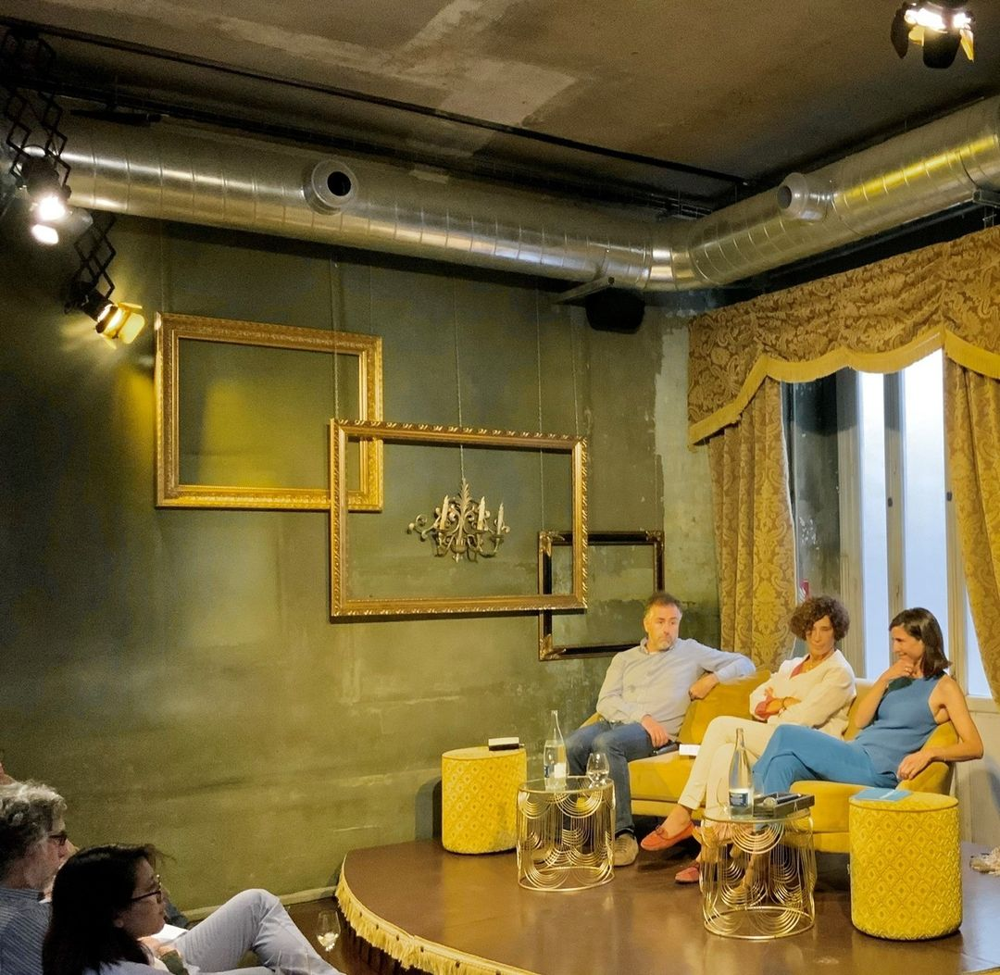

La vida buena ha sido objeto de estudio y búsqueda desde el principio de los tiempos: filósofos en
la Grecia Antigua, emperadores romanos; alquimistas y astrónomos medievales; científicos,
pensadores, escritores en la edad moderna.
Tras siglos de conocimientos acumulados, parecemos estar más lejos de la respuesta que nunca.
Quizás porque un tiempo que se mueve más aceleradamente ha creado la ilusión de una carrera,
donde todos corremos a solas y a ciegas hacia una vida más larga, sin saber realmente qué hacer
con ella.
Este ciclo busca unir perspectivas, tejer disciplinas que son aparentemente lejanas, pero que
ayudan a hacer posible el relato de las otras. Si acoplamos pensamientos dispares podemos
construir en comunidad e iluminar juntos el camino a seguir para vivir una Vida Buena, tan urgente
en el mundo de hoy. Y, tal como soñaba Marco Aurelio, dedicar una mirada al todo, entre todos.
DÓNDE SE DEBATE SOBRE
LA VIDA BUENA
LE CLAB
LECLAB es un espacio situado en la recién inaugurada Plaza de España, en la primera planta
de la Casa Gallardo, uno de los edificios más emblemáticos de la capital. Una singular casa
que fue el palacete original de 1850 sobre el que se construyó el edificio en 1914, año en el
que fue premio de arquitectura.
Es en este espacio emblemático dónde Luisa
Orlando ha imaginado y puesto en marcha
LECLAB, el nuevo club de Madrid con el
objetivo de convertirlo en el Club líder en la
realización y organización de eventos
culturales, con debates, espectáculo, música
y gastronomía. Puedes descubrir más sobre el espacio aquí:
https://leclab.madrid/
CÓMO SE DEBATE SOBRE
LA VIDA BUENA

Los lunes, a partir de las 19h30, en uno de los espacios más singulares de Madrid. Articulados
por el Club de la Vida Buena, esas tardes sirven para abordar el conocimiento partiendo de los
puntos de vista más dispares, desde el alma y hasta el todo.
− Apertura de puertas a las 19h30.
− Debate a partir de las 20h00 y hasta las
21h30: exposición (invitado), nudo
(lavidabuena) y desenlace (todos).
− Más desenlace hasta las 22h30.
Siempre en Leclab https://leclab.madrid/